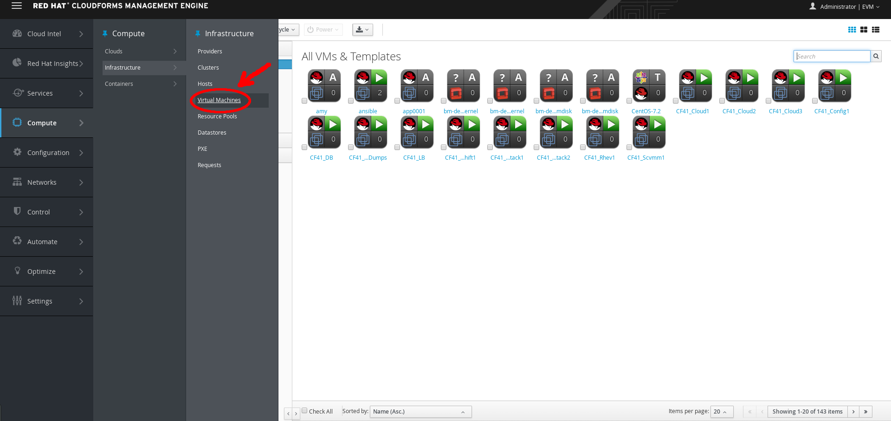
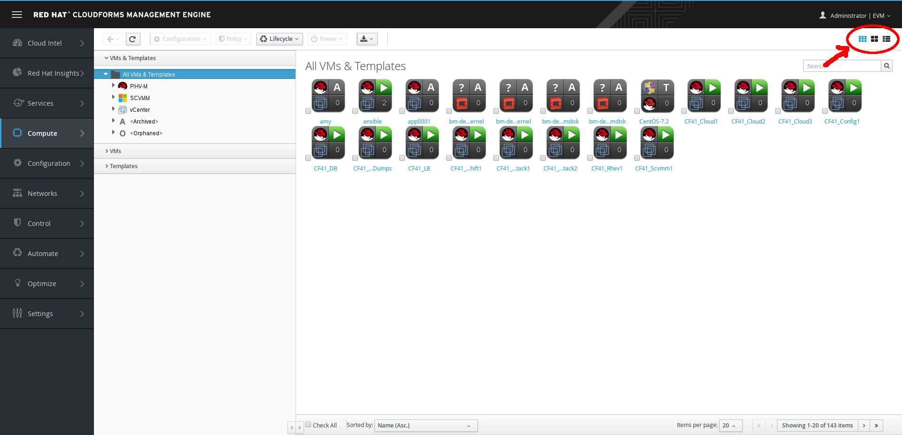
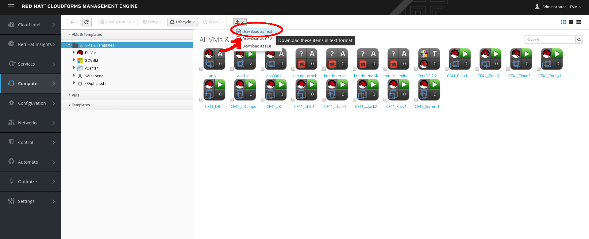
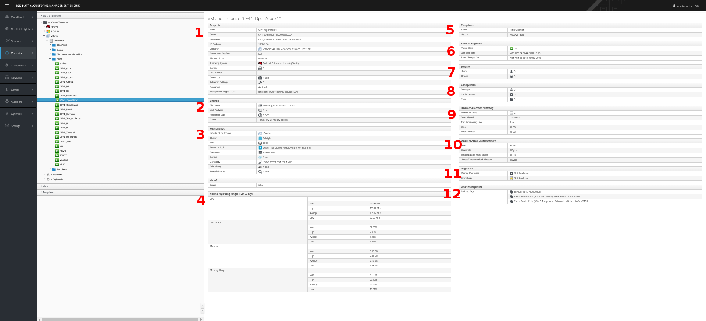
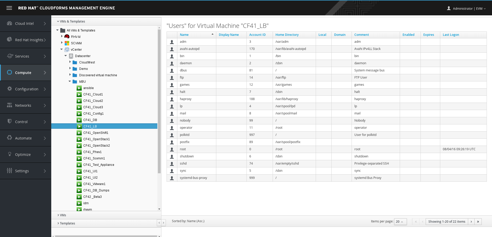
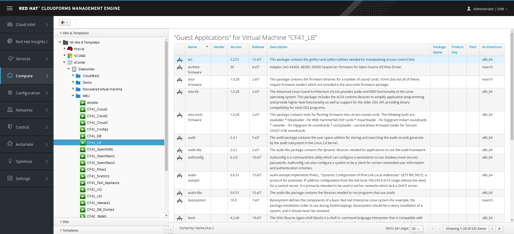
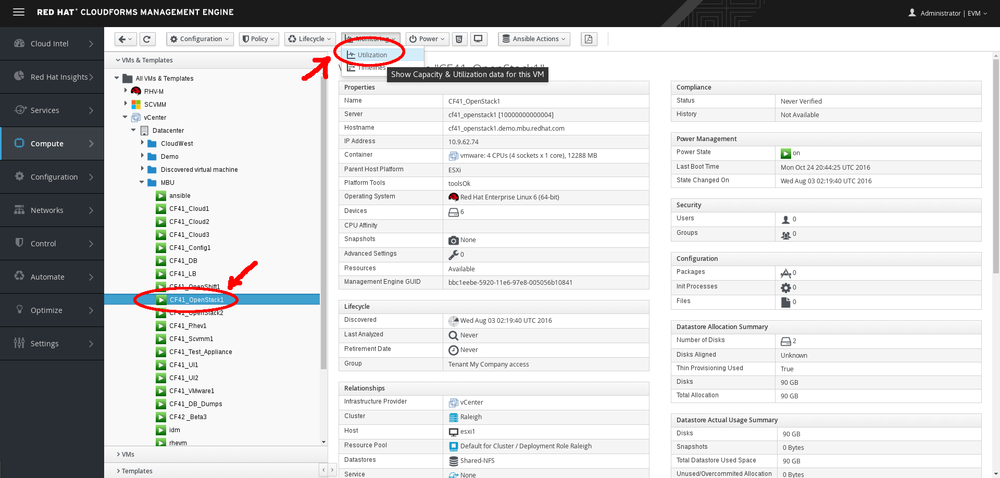
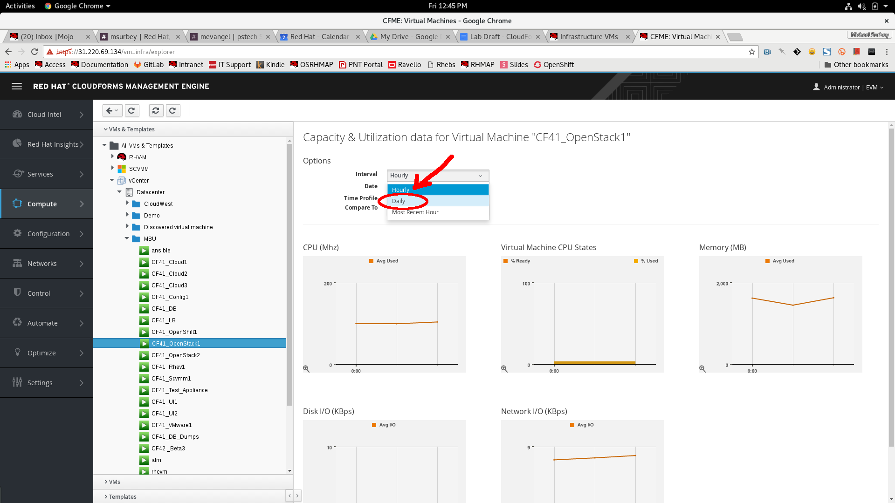

What's An Infrastructure VM?
In Red Hat CloudForms, infrastructure VMs are operating systems running under a hypervisor.
Explore Infrastructure VMs
Select Compute → Infrastructure → Virtual Machines.

Infrastructure VMs
A list of your private datacenter’s infrastructure virtual machines appears.
Explore the Virtual Thumbnail for Infrastructure VMs
The web interface uses virtual thumbnails to represent providers. Each thumbnail contains four quadrants by default, which display basic information about each provider.
Example Virtual Thumbnail
- The top left quadrant shows the operating system running on the VM.
- The top right quadrant shows the status of the VM.
- The image in the bottom left quadrant represents the type of host the VM is running on, such as ESXi or Red Hat Enterprise Virtualization.
- The bottom right quadrant shows the number of snapshots of this VM.
- A (Policy) in the center indicates that this host has one or more policies applied.
In the top right corner of the window, click to toggle between Grid, Tile, and List views.

Top Window Navigation VM Providers
Click (Download) to download a list of VMs.

Download VM Providers
Select the VM named CF41_OpenStack1, and examine the following details:

CF41_OpenStack1 VM Dashboard
- The Properties section shows detailed information about the VM.
- The Lifecycle section shows when this VM was discovered, when it was most recently analyzed, and when it is scheduled for retirement.
- The Relationships section shows the related infrastructure provider, cluster, host, datastore, resource pool, parent VM, and drift and analysis histories for this VM.
- The Normal Operating Ranges section shows the VM’s average CPU and memory utilization.
- The Compliance section shows whether the VM is compliant with its applied policies.
- The Power Management section shows the VM’s current power state, last boot time, and date of its most recent change in power state.
- The Security section lists users, groups, patches, firewall rules, and other operating system security-related information.
- The Configuration section lists applications/packages, services, and other operating system configuration information.
- The Datastore Allocation section shows the number of virtual disks in this VM—if the disks are aligned and if it is thin-provisioned—as well as the amount of space allocated.
- The Datastore Actual Usage Summary section shows how much actual disk space the VM is using.
- The Diagnostics section shows running processes and event logs for the VM.
- The Smart Management section shows that this host is tagged as existing at a specific location, as well as other tags that you can use in policies and other functions within CloudForms.
Click Users (under the Security section) to see a detailed list of user information.

CF41_OpenStack1 VM Dashboard Users
Click Packages (under the Configuration section) to view details of packages installed on this VM.

CF41_OpenStack1 VM Dashboard Packages
Explore Infrastructure VM Utilization
We will continue using the CF41_OpenStack1 VM. If needed, find it by returning to the list of all VMs (eg, Compute → Infrastructure → Virtual Machines → VMs → All VMs & Templates).
Click
(Monitor) and then select
(Utilization).

Navigate VMs Monitor Utilization
Try changing the Interval to Daily.

Monitor VM Utilization Interval
Examine the screen that appears, showing a detailed report of CPU, memory, disk I/O, and network.
- To see a specific data point, hover over any chart.
- To zoom in on a chart, click (Zoom In) in the lower left corner of the chart.
- To modify the timeframe displayed in the report, select the date range at the top of the screen.